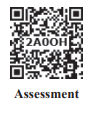

CONTENTS
PHYSICS
Unit |
Title |
Page Number |
Month |
Unit 6 |
Page Number 01 |
September |
|
Unit 7 |
Page Number 53 |
September/October |
|
Unit 8 |
Page Number 108 |
October |
|
Unit 9 |
Page Number 141 |
November |
|
Unit 10 |
Page Number 195 |
November and December |
|
Unit 11 |
Page Number 253 |
December |
|
|
Page Number 285 |
|

• Awareness on higher learning -courses, institutions and required competitive exams
• Financial assistance possible to help students to climb academic ladder
Learning Objectives:
Overview of the unit
• Gives clarity on the goals and intention of the topics
• Additional facts related to the topics covered to facilitate curiosity driven learning
Example problems
To ensure understanding, problems/illustrations are given at every stage before advancing to next level
Visual representation of concepts with illustrations • Videos, animations, and tutorials
To harness the digital skills to class room learning and experimenting
Recap of salient points of the lesson
Schematic outline of salient learning of the unit
Evaluate students’ understanding and get them acquainted with the application of physical concepts to numerical and conceptual questions
List of relevant books for further reading
Numerical/conceptual questions are solved to enable students to tackle standard problems in mechanics in appendix 1
• Model Questions - To motivate students aspiring to take up competitive examinations such as NEET, J E E, Physics Olympiad, JIPMER etc
• Scientific terms frequently used with their Tamil equivalents
Content focus
Covers ray and wave optics extensively, salient concepts in dual nature of radiation and matter, atomic and nuclear physics. Topics in semiconductors and communication are optimised. An exclusive unit on ‘Recent developments in physics’ highlights that physics is the basic building block for sciences, engineering, technology and medicine. With this, students are motivated to pursue higher education confidently
Back wrapper
Richard Philip Feynman, (1918–1988) a theoretical physicist who received noble prize in physics in 1965 for his contributions to the development of quantum electrodynamics. He is the first person to discuss the possiblity of manipulation of atoms that seeded nanotechnology. His lectures on various topics in physics are very popular among physicists. Illustration of Gravitational waves from two merging black holes. Actual photograph of a super massive black hole M 87*
E E-Joint Entrance Examination
Physics Olympiad Exam
NEET- National Eligibility and Entrance Test
N E S T- National Entrance Screening Test
A I E E E- All India Engineering Entrance Exam
A I I M S- All India Institute of Medical Science (Entrance Examination)
JIPMER- Jawaharlal institute of Postgraduate Medical Education and Research (Entrance Examination)
K V P Y- Kishore Vaigyanik Protsahan Yojana
J A M- Joint Admission Test
T I F R G S Admission Test
T I F R G S - Tata Institute of Fundamental Research Graduate School Admissions Examination
J E S T- Joint Entrance Screening Test
N E T- National Eligibility Test (C S I R and U G C)
GATE-Graduate Aptitude Test in Engineering
I C A R -A I E E A-Indian Council of Agricultural Research All India Entrance Examination
Integrated M, S, C physics
B. S c (Physics)
Integrated M. S c (Physics) (Central Universities)
Integrated M. S c (in Central Research Institutes through NEST and K V P Y with stipend)
B. S c. by B. S. by B. Statistics. by B. Math. By M. S. in Mathematics, Chemistry and Biology. (K V P Y)
B. E by B. Tech by B. Arch (J E E, A I E E E in I I T s and N I T s) M B B S by B. D. S by B. Pharm (NEET, JIPMER, AIIMS )
B. S c. (Agriculture) (I C A R -A I E E A)
Dual Degree Program B S & M S (J E E, J E S T in I I Ts and I I S E Rs)
B. S c (Hospitality administration)
B. S c (Optoelectronics)
B. S c (Optometry
B. Tech (Optics and Optoelectronics
M. S c. (Physics) (In Central and State Universities and Colleges)
M. S c. Physics (J A M in I I S c, I I T s and N I T s)
M. S c. (In State and Central Universities)
Medical Physics
Materials Science
Energy
Earth Sciences
Space science
Oceanography
Remote sensing
Electronics
Photonics
Optoelectronics
Acoustics
Applied electronics
Astronomy and Astrophysics
Nanoscience and Nanotechnology
Biostatistics
Bio informatics
Vacuum science
Indian Forest Services
Scientist Job in ISRO, D R D O, C S I R labs
Union Public Service Commission
Staff selection commission
Indian Defence services etc.
Public sector Bank
State P C S
Grade III & Compiler Post
Tax Assistant
Statistical Investigator
Combined Higher Secondary
Combined Graduate Level Exam etc
Scholarships for graduate and post graduate courses
International Olympiad: for getting stipend for Higher Education in Science and Mathematics
D S T – INSPIRE Scholarships (for U G and P G)
D S T – INSPIRE Fellowships (for P h. D)
U G C National Fellowship (for P h. D)
Indira Gandhi Fellowship for Single girl child (for U G and P G)
Moulana Azad Fellowship for minorities (for P h. D)
In addition various fellowships for SC/ST/PWD, OBC etc are available.
Visit website of University Grants Commission (U G C) and Department of Science and Technology (D S T)
Topics of Research
Quantum Physics and Quantum Optics
Astrophysics, Astronomy
String theory, Quantum gravity
Mathematical Physics, Statistical Mechanics
Quantum Field Theory
Particle Physics and Quantum Thermodynamics
Quantum information theory
Condensed Matter Physics, Materials Science
Electro magnetic Theory
Black Holes, Cosmology
Crystal Growth, Crystallography
Spectroscopy, Atomic, Molecular and Optical Physics
Nano Science and Nanotechnology
Energy and Environment Studies
Biophysics, Medical Physics
Cryptography, Spintronics
Optics and Photonics
Meteorology and Atmospheric Science
Indian Institute of Science (IISc) Bangalore www.iisc.ac.in
Raman Research Institute (RRI) Bangalore www.rri.res.in
Institute of Mathematical Sciences (IMSc) Chennai www.imsc.res.in
Indian Association for Cultivation of Science (IACS) Calcutta www.iacs.res.in
Chennai Mathematical Institute (CMI) Chennai www.cmi.ac.in
Tata Institute of Fundamental Research (TIFR) Mumbai www.tifr.res.in
Bhaba Atomic Research centre (BARC) Mumbai www.barc.gov.in
SN Bose centre Basic Natural science Calcutta www.bose.res.in
Indian Institute of Space Science and Technology (IIST) Trivandrum www.iist.ac.in
Physics Research Laboratory (PRL) Ahmedabad www.prl.res.in
Indian Institute of Astrophysics (IIA) Bangalore www.iiap.res.in
Institute of Physics (IOP) Bhubaneswar www.iopb.res.in
Institute for Plasma Research (IPR) Gujarat www.ipr.res.in
Inter university centre for Astronomy and A
Inter university centre for Astronomy and Astrophysics (IUCAA) Pune www.iucaa.in
Indira Gandhi centre for Atomic Research (IGCAR), Kalpakkam www.igcar.gov.in
Hyderabad central university, Hyderabad www.uohyd.ac.in
Delhi University, Delhi www.du.ac.in
Mumbai University, Mumbai www.mu.ac.in
SavithiribaiPhule Pune university, Pune www.unipune.ac.in
National Institute of Science Education and Research (NISER), Bhubaneshwar www.niser.ac.in
IISER Educational Institutions www.iiseradmission.in
Indian Institute of Technology in various places (IIT’s) www.iitm.ac.in
National Institute of Technology (NITs) www.nitt.edu
Jawaharlal Nehru University (JNU) www.jnu.ac.in
Central Universities www.ugc.ac.in
State Universities https://www.ugc.ac.in
CSIR – Academy (National laboratories, Delhi, Hyderabad, Trivandrum, Chennai, Calcutta etc)